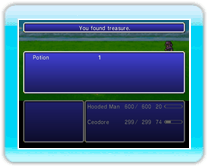

21 |
Schermata di battaglia / Combattere |
 |
|
Quando incontri un nemico sulla mappa del mondo o durante la storia, viene visualizzata la schermata di battaglia. Il tempo continua a trascorrere durante la battaglia, e ogni personaggio può eseguire il comando impartito quando la sua barra ATB (Attivazione del Turno di Battaglia) si riempie completamente. ● Comandi di battagliaUsa il menu dei comandi di battaglia per impartire ordini ai personaggi durante la battaglia (→ pag. 22). Se imposti la modalità battaglia su "Active" (Attiva), il tempo non si ferma mentre selezioni i comandi di battaglia (→ pag. 20).
● Ordine dei turniQuando due o più personaggi hanno la barra ATB al massimo, premi ● Regole di ingaggioPer vincere la battaglia devi sconfiggere tutti i nemici. Se l'intero gruppo è KO o pietrificato, la partita finisce. La barra ATBLa barra ATB mostra quanto tempo deve passare prima che i comandi vengano eseguiti. Oltre a indicare quanto bisogna aspettare affinché un personaggio possa scegliere un comando di battaglia, visualizza il tempo rimasto prima che un'abilità, un'Unione o determinate altre azioni vengano eseguite.

● Quando è il momento di fuggire...Tieni premuto

● Fine della battagliaQuando vinci una battaglia ottieni punti esperienza e gil, ma a volte puoi anche ricevere oggetti e altri tesori.
|
 |
 |
 |